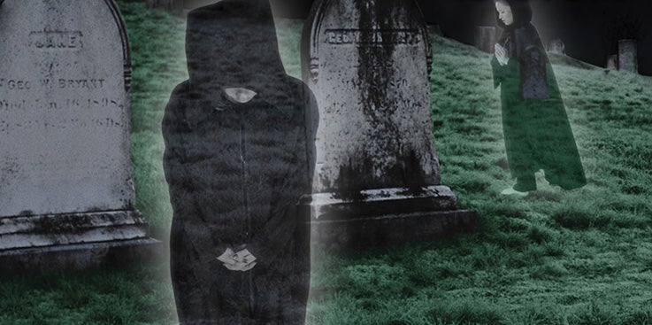

Alexander Bogomoletz, um cientista russo, disse uma vez que um homem deveria viver até os 150 anos de idade, no mínimo. Ele realmente preparou um soro que foi projetado para retardar o processo de envelhecimento dos tecidos conjuntivos do corpo. Infelizmente, o médico erudito morreu aos 64 anos, apenas 86 anos a menos do objetivo que ele havia estabelecido para si mesmo e para toda a humanidade. E ainda não entendemos os mistérios da vida e da morte.
Ninguém ainda descobriu a fonte da juventude, e ninguém passou por aquele véu da morte para retornar e nos contar como é do outro lado. A única informação autêntica que temos sobre este assunto é encontrada no grande livro de Deus, a Bíblia. Aqui estão reveladas as respostas para perguntas que têm perturbado os corações de homens e mulheres ao longo dos tempos. Perfurando a espuma da emoção humana e da superstição, ela trará uma garantia satisfatória para aqueles que temem o futuro e que se perguntam o que acontece com a alma cinco minutos após a morte.
Para introduzir este assunto, precisamos encontrar a resposta para uma grande e básica pergunta. Se pudermos respondê-la corretamente, todas as outras perguntas sobre a morte e a alma se abrirão como flores ao sol. A questão realmente importante é esta: Que tipo de natureza inerente o homem possui? Como Deus o criou? Ele tem uma natureza mortal ou imortal? De acordo com o dicionário, a palavra “mortal” significa “sujeito à morte”, e a palavra “imortal” significa “não sujeito à morte”. Simplificando, então, estamos perguntando se Deus criou o homem com uma natureza que poderia morrer ou com o poder de uma vida sem fim.
A resposta a essa pergunta significativa é encontrada em Jó 4:17: “Será o homem mortal mais justo do que Deus? Será o homem mais puro do que o seu Criador?” Essa é a palavra que estamos procurando! O homem é mortal. Ele está sujeito à morte. Deus não o fez sem a capacidade de se deteriorar e morrer. O fato é que somente Deus tem esse poder inerente de existência eterna. Ele é imortal. E a única vez que essa palavra é usada na Bíblia, ela se refere a Deus. “Ora, ao Rei eterno, imortal, invisível, ao único Deus sábio, seja honra e glória para todo o sempre. Amém” (1 Timóteo 1:17).
A família humana não foi investida com uma imortalidade natural. A Palavra de Deus nos assegura que somente Deus tem esse tipo de natureza. Ele é o autor da vida, a grande fonte de toda a existência. Dele todas as outras vidas no universo foram derivadas. “Rei dos reis e Senhor dos senhores; Aquele que tem, ele só, a imortalidade, e habita na luz inacessível; a quem nenhum dos homens viu nem pode ver; ao qual seja honra e poder sempiterno. Amém” (1 Timóteo 6:15, 16).
Neste ponto, alguém pode levantar outra questão sobre o assunto da imortalidade. É possível que o homem tenha um corpo mortal, mas uma alma imortal vivendo no tabernáculo da carne? Talvez a pessoa “real” não seja o corpo, mas a entidade-alma imortal que habita dentro do corpo mortal. Não precisamos nos confundir sobre este ponto, porque ele é concisamente resolvido por vários textos bíblicos.
Deus disse, por meio do profeta: “Eis que todas as almas são minhas; como a alma do pai, assim também a alma do filho é minha; a alma que pecar, essa morrerá” (Ezequiel 18:4). Isso estabelece firmemente que a alma definitivamente não é imortal por natureza, ou não poderia experimentar a morte. Já que a palavra “imortal” significa “não sujeito à morte”, não poderia haver questão de morte para uma alma que possui uma imortalidade inata. Pelo menos dez outros versículos afirmam exatamente a mesma coisa: a alma não é naturalmente imortal.
Jesus, o grande Mestre Instrutor, declarou que a alma poderia morrer, em Mateus 10:28. “E não temais os que matam o corpo... temei antes aquele que pode fazer perecer no inferno tanto a alma como o corpo.” Por esta declaração clara, Cristo coloca o assunto além de qualquer dúvida. A alma pode morrer e morrerá no fogo do inferno. Portanto, ela não pode ser imortal por natureza.
Isso é chocante para muitas pessoas. A posição tradicional tem sido exatamente o oposto disso. Quão perturbador é saber que em todas as 1700 ocorrências bíblicas das palavras “alma” e “espírito” nenhuma vez elas são referidas como imortais ou não-morrendos.
De onde, então, veio a doutrina? A maioria de nós já ouviu falar sobre a “alma que nunca morre” desde os primeiros anos da infância. Uma coisa é certa: ela não se originou nas Escrituras. A verdade é que veio diretamente da tradição e mitologia pagãs. A antiga adoração aos ancestrais chineses estava enraizada na crença de que a alma não morria. Os hieróglifos das pirâmides egípcias revelam que a doutrina de uma alma naturalmente imortal era básica para sua adoração ao deus sol. Na Índia, onde vivi por anos, os hindus acreditam fortemente na reencarnação e na transmigração da alma. As cerimônias de vodu africanas mais obscuras são construídas em torno do conceito de uma alma imortal.
Não há um texto que apoie tal ensinamento na Bíblia cristã; no entanto, a Palavra nos diz como a doutrina começou e quem pregou o primeiro sermão sobre o assunto. Leia Gênesis 3:1-4, “Ora, a serpente era mais astuta que todas as alimárias do campo que o Senhor Deus tinha feito. E disse à mulher: É assim que Deus disse: Não comereis de toda árvore do jardim? E a mulher disse à serpente: Do fruto das árvores do jardim comeremos; mas do fruto da árvore que está no meio do jardim, disse Deus: Não comereis dele, nem nele tocareis, para que não morrais. E a serpente disse à mulher: Certamente não morrereis.”
Observe que alguém discordou de Deus. O Criador declarou que o pecado traria a morte, mas Satanás disse o oposto: "Você não morrerá de verdade". Essa foi a primeira mentira de bisavô que já foi contada, e quem a contou tem tentado sustentá-la desde então. Esse sermão original sobre a imortalidade natural foi repetido muitas vezes ao longo dos anos, muitas vezes por pregadores e teólogos que deveriam saber mais. Alguns anos atrás, o Reader's Digest apresentou um artigo intitulado "Não há morte", de um dos ministros protestantes mais populares da América. O grande pregador disse exatamente a mesma coisa que o grande enganador disse a Eva: "Você realmente não morre. Pode parecer a morte, mas você realmente continua vivendo e sabe mais depois do que sabia antes".
Essa doutrina pode ser perigosa? Na verdade, envolve muito mais do que apenas promulgar uma declaração falsa. As implicações desse ensinamento satânico são de longo alcance e eternas em consequência. Milhões serão perdidos porque não entendem a verdade sobre a natureza do homem. O engano nesse ponto abre uma porta que pode inundar a vida com escuridão e controle demoníaco real. A única proteção que teremos contra esse perigo insidioso é saber a verdade sobre a morte e a alma.
A definição inspirada mais clara e concisa da morte foi escrita por Salomão: “Então o pó retornará à terra, como o era, e o espírito retornará a Deus, que o deu” (Eclesiastes 12:7).
Imediatamente somos atingidos pela palavra “retorno”. Após a morte, tudo parece retornar de onde veio. O pó retorna à terra de onde foi tirado, e o espírito retorna a Deus que o deu. A morte é exatamente o oposto da criação.
É fácil para nós imaginar o processo de decadência e decomposição corporal. Entendemos muito bem que os componentes físicos do corpo são os mesmos da própria terra. Quando é enterrado, o corpo reverte aos elementos químicos do solo do qual o Criador o tirou no começo.
Mas e o espírito que retorna a Deus? Isso não é tão fácil de entender. Não há um homem no mundo que possa explicar isso com sabedoria humana. No entanto, muitos versículos na Bíblia lançam luz sobre esse ponto crucial. Tiago escreveu: “Porque, assim como o corpo sem espírito está morto, assim também a fé sem obras é morta” (Tiago 2:26). A palavra “espírito” tem uma referência marginal que diz “ou sopro”. Isso é muito importante. A raiz real da palavra no grego é “pneuma”, uma palavra que significa “sopro” ou “ar”. Pegamos nossa palavra inglesa “pneumonia” de pneuma porque é uma doença dos pulmões, ou da respiração. Temos pneus pneumáticos, também derivados de pneuma, porque eles têm ar neles. Mas essa mesma palavra grega “pneuma” também tem outro significado. Significa “espírito”. Por exemplo, o termo grego para “Espírito Santo” é “Hagios pneumatos”, “Sopro Sagrado” ou “Espírito Santo”.
Isso nos leva a uma conclusão muito interessante. As palavras “sopro” e “espírito” são frequentemente usadas de forma intercambiável na Bíblia. Jó disse: “Enquanto meu fôlego estiver em mim, e o espírito de Deus estiver em minhas narinas” (Jó 27:3). Agora, não é preciso um alto grau de inteligência para saber que Jó estava descrevendo a mesma coisa pelas palavras “sopro” e “espírito”. O homem tem apenas fôlego em suas narinas. Na verdade, foi isso que Deus soprou nas narinas do homem no momento da criação. “E formou o Senhor Deus o homem do pó da terra, e soprou em suas narinas o fôlego da vida; e o homem se tornou alma vivente” (Gênesis 2:7).
Agora a imagem começa a clarear. Quando Salomão descreveu o espírito retornando a Deus, ele tinha que estar se referindo ao sopro, porque era isso que Deus deu no começo e, portanto, era a única coisa que agora poderia “retornar” Àquele que o deu. A nota marginal de Gênesis 7:22 se refere ao sopro da vida como “o sopro do espírito da vida”.
O salmista descreve a morte com estas palavras: “Tu lhes tiras o fôlego, e morrem, e voltam ao seu pó. Envias o teu espírito, e são criados” (Salmo 104:29, 30). Aqui a ordem é invertida, e o fôlego retorna a Deus na morte. Salomão disse que o espírito retorna. Aqui Deus dá o espírito para criar, mas Gênesis diz que Ele deu o fôlego para criar. Isso só faz sentido quando entendemos que as duas palavras são usadas de forma intercambiável e significam a mesma coisa.
Por favor, observe que esse “espírito da vida” não é necessariamente o mesmo que o Espírito Santo, nem o “sopro da vida” é o mesmo que o ar normal que respiramos. Esse sopro ou espírito é o poder especial e vivificante de Deus que torna o corpo um organismo funcional. Leia Gênesis 2:7 novamente e tente visualizar o ato da criação. “E o Senhor Deus formou o homem do pó da terra.” Não temos dificuldade com isso. Podemos ver aquele corpo morto, perfeitamente formado e contendo os próprios elementos necessários para a vida. Mas não havia vida. O coração não estava batendo. O sangue estava lá, mas não estava fluindo. O cérebro estava lá, mas não estava pensando.
Então Deus acrescentou mais uma coisa ao corpo que Ele havia criado. Ele “soprou em suas narinas o fôlego da vida, e o homem se tornou uma alma vivente” (Gênesis 2:7). Não perca o significado dessas palavras — elas são frequentemente mal interpretadas. Deus não colocou uma alma no corpo. Ele acrescentou apenas uma coisa — fôlego ou espírito. Então, como resultado da união do corpo e do fôlego, o homem SE TORNOU uma alma.
Milhões aceitaram a visão falsa e tradicional de que Deus colocou uma alma no corpo para criar o homem. Isso se baseia inteiramente na doutrina comum e errônea de todas as religiões não cristãs. Na Bíblia, exceto no uso poético ou alegórico, a alma não entra e sai do corpo; nem tem uma existência independente fora do corpo. Como a palavra grega “psuche”, que significa “vida”, às vezes foi traduzida como “alma” em nossa versão King James, alguns tiraram conclusões erradas; mas apenas porque aplicam uma definição falsa à palavra “alma”. Milhões foram ensinados que a alma possui uma imortalidade natural, e toda vez que leem ou ouvem a palavra, assumem algo que é totalmente falso e antibíblico. Nem uma única vez na Bíblia a alma é referida como sendo imortal ou imortal.
O fato é que a alma é a vida consciente que resultou quando Deus adicionou o sopro ou espírito ao corpo. Uma ilustração simples nos ajudará a ver essa verdade mais claramente. Vamos comparar o corpo a uma lâmpada. A corrente elétrica que flui para essa lâmpada representa o sopro da vida que Deus colocou no corpo, e a própria luz representará a alma que o homem se tornou depois que o sopro se juntou ao corpo. Ao olharmos para a luz brilhante, vemos uma representação perfeita da criação completa. Agora apertamos o botão e desligamos a luz. O que aconteceu? A corrente deixou a lâmpada, assim como o sopro deixa o corpo na morte. Agora, onde está a luz? Ela subiu para a tomada elétrica? Não, ela simplesmente deixou de existir quando a corrente se separou da lâmpada. Então, vamos perguntar: onde está a alma quando o sopro se separa do corpo? Simplesmente não há alma até que, na ressurreição, Deus restaure o sopro da vida ao corpo.
Isso não deveria soar tão estranho para nós, agora que descobrimos como tudo “retorna” na morte ao modo como era antes. Antes da criação, o homem não existia em alguma forma desencarnada. Não havia personalidade, nem emoções conscientes antes de Deus adicionar o sopro ao corpo. Naquele momento, o homem “se tornou uma alma vivente”. Se a alma veio a existir como resultado dessa união, quando a alma deixa de existir? Certamente como resultado da quebra dessa união.
Suponha que temos duas coisas diante de nós: tábuas e pregos. Pegamos um martelo e cravamos os pregos nas tábuas, formando uma caixa. Agora temos três coisas em vez de duas; temos tábuas, pregos e uma caixa. Mais tarde, cuidadosamente retiramos os pregos e os colocamos ao lado das tábuas. Novamente, temos apenas duas coisas diante de nós: tábuas e pregos. O que aconteceu com a caixa? Não há caixa, porque ela requer as duas coisas juntas para fazê-la existir.
Da mesma forma, Deus começou com duas coisas, o corpo e o espírito. Quando Ele os juntou, a alma “se tornou” — ela veio a existir, começou a existir. Na morte, o sábio nos diz, o espírito retorna a Deus, e o corpo retorna ao pó. E em nenhum lugar na Bíblia somos informados de que qualquer alma sobrevive ao corpo, ou continua a existir sem um corpo. A alma, ou a vida, não tem existência sem o poder de Deus residindo no corpo. Na morte, esse poder é removido; ele retorna a Deus; e o estado daquele homem é exatamente o que era antes do sopro se juntar ao corpo. Isso significa nenhuma vida, nenhuma consciência e nenhuma personalidade.
Até mesmo os animais são chamados de almas na Bíblia, porque eles têm o mesmo poder de Deus para fazê-los viver (Apocalipse 16:3). O sábio escreveu: “Porque o que sucede aos filhos dos homens, também aos animais sucede uma só coisa; como morre um, assim morre o outro, e todos têm o mesmo fôlego; ... Todos vão para um lugar; todos são pó, e todos ao pó tornarão” (Eclesiastes 3:19, 20). Isso não significa, é claro, que o homem e os animais tenham o mesmo fim último. Haverá uma ressurreição e julgamento para as criaturas morais de Deus, mas a vida vem somente de Deus, seja ela humana ou animal. E essa vida é frequentemente chamada na Bíblia de alma.
Com esse pano de fundo, estamos agora preparados para ver o que realmente acontece com a pessoa que morre. No sermão de Pedro no dia de Pentecostes, ele fez esta forte declaração sobre Davi, que estava morto há mais de 1.000 anos: “Porque Davi não subiu aos céus” (Atos 2:34). Agora pense nisso por um momento. Davi havia partido desta vida há muito tempo e, embora muitas vezes rebelde, havia recebido a garantia do perdão e da salvação. Por que, então, ele não estava desfrutando da bem-aventurança do céu dez longos séculos após sua morte? A pergunta é respondida no versículo 29, onde Pedro explica: “Homens irmãos, seja-me permitido dizer-vos livremente acerca do patriarca Davi, que ele morreu e foi sepultado, e entre nós está até hoje o seu sepulcro.”
O inspirado Pedro disse que Davi estava lá em seu túmulo, e ainda não havia ascendido ao céu. Que interessante! Se o homem segundo o coração de Deus não havia recebido sua recompensa 1.000 anos após a morte, o que dizer de todas as outras pessoas boas que viveram e morreram até aquele momento? Elas também estavam descansando em seus túmulos, aguardando o chamado de Deus na ressurreição.
Jesus assegurou ao povo de Seus dias: “...serás recompensado na ressurreição dos justos” (Lucas 14:14). Novamente, Ele disse: “Porque o Filho do homem virá na glória de seu Pai, com os seus anjos; e então retribuirá a cada um segundo as suas obras” (Mateus 16:27). Não há equívoco aqui. Em linguagem simples e direta, Jesus declarou que ninguém seria recompensado até que a ressurreição acontecesse em Sua segunda vinda. Isso significa que nenhum dos justos mortos foi para o céu até agora. Todos estão esperando em seus túmulos pelo julgamento e o fim do mundo. Quase as últimas palavras da Bíblia confirmam esse fato. “E eis que cedo venho, e a minha recompensa está comigo, para retribuir a cada um segundo as suas obras” (Apocalipse 22:12). Essa recompensa dos últimos dias é descrita ainda mais por Paulo em 1 Coríntios 15:53: “... e é necessário que isto que é mortal se revista da imortalidade.” Quando isso acontece? “Num momento, num piscar de olhos, ao som da última trombeta” (Versículo 52).
Isso resolve a questão sobre a recompensa dos justos sem nenhuma dúvida, mas e os ímpios? Quando eles serão punidos por seus pecados? A resposta surpreendente é encontrada em 2 Pedro 2:9, “O Senhor sabe livrar da tentação os piedosos, e reservar os injustos para o dia do julgamento, para serem castigados.” Aí está! Os ímpios são reservados em algum lugar até que o dia do julgamento chegue. Onde eles são reservados? Jesus responde à pergunta, “Não vos maravilheis disto, porque vem a hora em que todos os que estão nos sepulcros ouvirão a sua voz, e sairão; os que tiverem feito o bem, para a ressurreição da vida; e os que tiverem feito o mal, para a ressurreição da condenação” (João 5:28, 29).
Nosso Senhor deixou extremamente claro que todos seriam reservados em seus túmulos até serem chamados na ressurreição para receber a vida ou a condenação. Isso não é apenas boa teologia, mas também bom senso. Obviamente, ninguém pode ser punido até depois de ser julgado. A justiça exige que isso seja feito. Até mesmo o juiz terreno mais injusto seria acusado de fazer o contrário. Suponha que um homem fosse perante o juiz acusado de roubo, e o juiz dissesse: "Coloque-o na prisão por dez anos e então ouviremos seu caso". Não! Não! Isso nunca poderia ser! E o juiz de toda a terra faria isso ao lidar com os ímpios? Nunca! O julgamento seria uma farsa em tal caso — não teria significado.
A maravilhosa mensagem da Bíblia é que tanto os bons quanto os maus estão dormindo em seus túmulos até o dia da ressurreição. Naquele momento, eles são trazidos para enfrentar o julgamento, após o qual punições e recompensas são atribuídas. Jó disse: “Assim o homem se deita, e não se levanta; até que não haja mais céus, não acordará, nem será despertado do seu sono. Quem me dera que me escondesses na sepultura, e me ocultasses, até que a tua ira passe, e me designasses um tempo determinado, e te lembrasses de mim! Morrendo o homem, porventura tornará a viver? Todos os dias do meu tempo determinado esperarei, até que venha a minha mudança. Tu me chamarás, e eu te responderei; terás desejo da obra das tuas mãos” (Jó 14:12-15).
Em harmonia com todo o resto da Bíblia, Jó descreve um período de sono inconsciente no túmulo antes de acordar para receber sua recompensa. Isso concorda com Daniel, que falou da vinda de Cristo com estas palavras: “E naquele tempo o teu povo será liberto... E muitos dos que dormem no pó da terra ressuscitarão, uns para a vida eterna, e outros para vergonha e desprezo eterno” (Daniel 12:1, 2). Há uma razão pela qual tantos escritores inspirados falam da morte como um sono. É uma descrição perfeita do estado dos mortos. Quando um homem cansado se deita à noite, ele é imediatamente envolvido pelo sono. No que lhe diz respeito, no momento seguinte ele é despertado pelo sol nascente. Ele está totalmente inconsciente de qualquer coisa que tenha acontecido enquanto dormia. Assim é com o sono da morte.
Lázaro havia morrido. Jesus disse aos Seus discípulos: “Nosso amigo Lázaro dorme; mas eu vou, para despertá-lo do sono. Então disseram os seus discípulos: Senhor, se ele dorme, ficará bom. Contudo, Jesus falava da sua morte; mas eles pensavam que ele falava do repouso do sono. Então Jesus lhes disse claramente: Lázaro morreu” (João 11:11-14).
Aqui está um exemplo clássico do verdadeiro ensinamento bíblico sobre a morte. Cristo chamou a morte de sono. Mais tarde, Ele ficou ao lado do sepulcro escavado na rocha de Seu amigo e gritou: "Lázaro, venha para fora!" Ele não disse: "Lázaro, desça." Lázaro não estava no céu, nem em nenhum outro lugar, exceto dentro das paredes de seu túmulo. Em resposta ao chamado de Jesus, ele acordou de seu sono de morte e saiu para a luz do sol.
Muitas histórias exageradas circularam sobre pessoas que voltaram dos mortos, mas esta é a história mais autêntica registrada. Não há absolutamente nenhuma dúvida de que Lázaro estava morto há quatro dias. Suas irmãs protestaram quando Jesus ordenou que a pedra fosse removida da porta. Marta disse: "... Senhor, ele já cheira mal" (João 11:39).
A maioria dos relatos modernos de pacientes que ressuscitam de insuficiência cardíaca incluem recitais dramáticos de vistas gloriosas do céu. O que esse homem justo tinha a dizer sobre seus quatro dias de morte? Ele relatou visões celestiais de recompensa celestial? Nenhuma palavra. Ele estava dormindo, assim como Jesus havia indicado. Foi como um momento de esquecimento.
A propósito, que tipo de punição indizível teria sido trazer Lázaro de volta a este mundo escuro depois de estar na presença de Deus? Certamente ele teria implorado para não retornar, se ele realmente estivesse desfrutando das recompensas dos justos. Uma retomada da vida terrena teria sido pior do que o horror do inferno em comparação com noventa e seis horas no Paraíso. Certamente nosso Senhor nunca teria sido culpado de pregar tal peça em Seu amigo Lázaro.
Por que achamos difícil acreditar na terminologia simples que Jesus usou para descrever a morte? Certamente não temos problemas em entender a natureza do sono. Suponha que um homem esteja profundamente adormecido em um banco de parque. Ele dorme tão profundamente que não percebe a aproximação furtiva de um agressor. Em outro momento, ele está morto em uma poça de sangue. Agora, de acordo com a visão popular da morte, esse homem que não sabia nada enquanto dormia, de repente sabe de tudo quando sua alma deixa seu corpo. Mas como isso pode ser verdade? Jesus disse que a morte é um sono. Se o homem não sabia nada enquanto dormia, como ele poderia saber mais depois da morte? As palavras de Cristo não teriam significado se as distorcêssemos para significar o que queremos acreditar.
Não somos deixados a nos perguntar sobre a natureza desse sono da morte. Muitos escritores da Bíblia dão explicações detalhadas sobre como ele é. “Não confieis em príncipes, nem em filho de homem, em quem não há salvação. Sai-lhe o fôlego, e ele volta à sua terra; naquele mesmo dia perecem os seus pensamentos” (Salmo 146:3, 4).
De todos os aspectos intrigantes da morte que poderiam ser discutidos, os escritores inspirados falavam mais frequentemente sobre a natureza inconsciente dela. Nunca encontramos nenhuma das descrições emocionantes da vida após a morte que marcam a versão moderna da doutrina. A teologia adotou seu ensinamento diretamente das formas agradáveis de adoração pagã. Davi disse: “Ele retorna à sua terra; naquele mesmo dia seus pensamentos perecem.” Salomão escreveu: “Porque os vivos sabem que morrerão; mas os mortos não sabem coisa nenhuma, nem têm eles daí em diante recompensa; porque a sua memória ficou entregue ao esquecimento. Também o seu amor, e o seu ódio, e a sua inveja já pereceram; nem têm eles mais parte para sempre em coisa alguma do que se faz debaixo do sol... Tudo quanto te vier à mão para fazer, faze-o conforme as tuas forças; porque na sepultura, para onde tu vais, não há obra, nem projeto, nem conhecimento, nem sabedoria alguma” (Eclesiastes 9:5, 6, 10).
Se alguém deliberadamente tentasse produzir palavras e expressões mais fortes para sustentar um sono totalmente sem sonhos na morte, ele teria dificuldade em igualar essas palavras do sábio. Suponha por um momento que as mesmas declarações contundentes fossem feitas para afirmar a consciência após a morte. Em outras palavras, suponha que Salomão tivesse dito: "Seu amor, seu ódio e sua inveja continuarão... pois há trabalho, conhecimento e sabedoria na sepultura para onde tu vais." Uma declaração tão inequívoca seria, com razão, o fim de todo o debate sobre o assunto. Quem poderia argumentar contra isso?
Mas aqui está a verdade incrível! A Bíblia não só não contém tal declaração, mas declara repetidamente o oposto! No entanto, as pessoas continuam a acreditar apenas no que querem acreditar. Passando por cima dos versículos explícitos dados por vários autores inspirados, que contam a verdade sobre a morte, multidões seguem cegamente tradições vazias aprendidas de pais ou pastores.
Novamente lemos: “Porque a sepultura não te pode louvar, nem a morte te celebrar; os que descem à cova não podem esperar pela tua verdade. Os vivos, os vivos, esses te louvarão, como eu hoje o faço” (Isaías 38:18, 19). Os justos mortos não louvariam a Deus se fossem conduzidos ao céu em sua morte? Davi repete a mesma verdade atemporal: “Os mortos não louvam ao Senhor, nem os que descem ao silêncio” (Salmo 115:17). “Porque na morte não há lembrança de ti; na sepultura, quem te louvará?” (Salmo 6:5).
Por que tantos resistem à óbvia importância dessas declarações bíblicas? Fortes preconceitos tradicionais podem ser parte da resposta, mas há muito mais envolvido. Muitos acreditam sinceramente que têm provas físicas, testemunhais oculares, de que os mortos retornam. Eles têm o testemunho de seus próprios sentidos de que realmente conversaram com entes queridos que partiram. O que pode ser dito sobre essas manifestações? Eles podem dar o local, a data e a hora em que foram confrontados por parentes ou amigos mortos exatamente da mesma forma que quando viveram.
Devemos desconsiderar todas essas aparências psíquicas como aberrações mentais de indivíduos emocionais e instáveis? Dificilmente. O fato é que as formas aparecem, e elas foram verificadas inúmeras vezes. Mas com base na infalível Palavra de Deus, podemos rejeitá-las categoricamente como sendo os espíritos dos mortos. Os mortos não podem retornar; nem têm qualquer existência post mortem em qualquer forma consciente e viva.
Então quem está aparecendo nessas formas corpóreas e fazendo alegações mentirosas em nome dos mortos inocentes? Quem mais senão o pai da mentira que construiu seu primeiro engano em torno da questão da morte? Ele ousadamente contradisse Deus quando disse a Eva: "Certamente NÃO morrereis." Quando a morte se seguiu, Satanás tentou fazer os sobreviventes acreditarem que era apenas uma ilusão. Ao personificar aqueles que morreram, Satanás persuadiu milhões de que ele estava certo e Deus estava errado. Aceitando o testemunho de seus olhos e ouvidos acima do testemunho da Bíblia, muitos se tornaram especialistas em invocar os espíritos em sessões espíritas.
Muitas vezes Satanás explora a tristeza daqueles que perderam parentes e tenta atraí-los para sua armadilha espiritualista fingindo ser seu próprio ente querido especial. Que ilusão avassaladora! Somente aqueles que fortaleceram suas mentes com as verdades da Bíblia serão capazes de resistir a esse tipo de ataque.
Deixe-me compartilhar com você um exemplo incrível do modo de operação de Satanás. Um querido amigo meu serviu por muitos anos como missionário na África. Enquanto ele e sua esposa viviam em uma estação missionária isolada, sua filha de três anos foi atingida por uma febre tropical fatal. Eles enterraram a menina em uma encosta em frente à casa deles. Poucos dias após o funeral, a mãe estava sentada em sua cozinha quando a porta se abriu e sua filha correu pela sala para se jogar nos braços da mãe. Você consegue se imaginar sob esse tipo de horror traumático? E para piorar, a menina gritou: "Mamãe, eu não estou morta! Eu não estou morta!"
Felizmente, aquela mãe conhecia a verdade bíblica sobre a morte, e Deus lhe deu o poder de orar instantaneamente por libertação daquela mascarada satânica. Quando ela invocou o nome de Jesus, a forma desapareceu.
Este é um caso excepcional? Infelizmente. Não. Experiências como esta têm sido repetidas inúmeras vezes. Sem dúvida, há alguns charlatões que criam suas próprias ilusões, mas temos que reconhecer que, muito frequentemente, o príncipe de todo o mal está manipulando as mentes das pessoas por sua perícia sobrenatural em enganar.
Pense nas implicações disso por um momento! Milhões literalmente submeteram suas vidas ao controle de demônios acreditando que estavam sendo aconselhados por parentes amorosos. Você não consegue ver a ironia monstruosa da situação? E você não consegue ver quão facilmente Satanás pode até mesmo começar a controlar as vidas de cristãos que não entenderam o verdadeiro ensinamento bíblico sobre a morte? A única segurança para qualquer um é a Palavra de Deus. No entanto, o cenário está pronto para a maioria dos católicos e protestantes serem varridos pela manifestação final do poder satânico — tudo porque lhes foi ensinada uma mentira sobre o estado dos mortos.
Considere o quão confuso seria se recompensas e punições estivessem sendo aplicadas agora. Qual seria o propósito de uma ressurreição? Por que ter uma ressurreição? Obviamente, cada alma já teria um destino determinado, e a farsa de algum julgamento final fictício seria totalmente sem sentido. Todas as garantias piedosas ouvidas em funerais sobre entes queridos no céu são simplesmente repetições da primeira mentira de Satanás para a família humana. A representação de almas imaginárias e imateriais voando para longe do corpo na morte não é uma fonte de conforto para parentes enlutados. Paulo descreveu o tempo em que os justos mortos estarão com o Senhor em 1 Tessalonicenses 4:16-18, e concluiu com estas palavras: “Portanto, consolai-vos uns aos outros com estas palavras.”
Aqui está uma imagem perfeita e inspirada do verdadeiro conforto, e precisamos entender claramente a qual palavra Paulo estava se referindo que traria tal conforto. Os dois versículos anteriores nos dão as palavras: “Porque o mesmo Senhor descerá do céu com grande brado, e com voz de arcanjo, e com a trombeta de Deus; e os mortos em Cristo ressuscitarão primeiro. Depois nós, os que ficarmos vivos, seremos arrebatados juntamente com eles nas nuvens, a encontrar o Senhor nos ares, e assim estaremos para sempre com o Senhor.”
Paulo descreve aqui, sem nenhuma limitação, o caminho e os meios pelos quais vamos estar com o Senhor. Não negligencie a palavra “assim” em sua declaração. Ela significa “desta maneira”. Com essa pequena palavra, Paulo excluiu qualquer outra maneira de estar com o Senhor. Quando ele descreveu a vinda de Jesus e a ressurreição dos santos como sendo a maneira e os meios de estar com o Senhor, ele automaticamente excluiu todos os outros meios de fazê-lo. Então ele nos admoesta a “consolar uns aos outros com estas palavras”.
Repito que não pode haver conforto no conceito pseudocristão de que alguma entidade invisível e intangível deixa o corpo na morte para ser punida ou recompensada. É reconfortante acreditar que parentes não salvos estão sofrendo o tormento do fogo inextinguível? Há consolo na imagem de entes queridos olhando do céu para as circunstâncias de partir o coração daqueles que ficaram para trás? Não é de se admirar que Paulo tenha sido tão específico ao descrever o segundo advento de Jesus e a ressurreição como a única maneira de alguém estar com o Senhor após a morte e, incidentalmente, como a única maneira de ser consolado em sua partida.
A magnífica declaração de Paulo destaca o fato glorioso de que a morte e a sepultura não são o fim. Haverá um despertar do sono da morte. Os justos receberão o dom da imortalidade, mas tudo isso acontecerá “num momento, num abrir e fechar de olhos, ao som da última trombeta; porque a trombeta soará, e os mortos ressuscitarão incorruptíveis, e nós seremos transformados. Porque é necessário que isto que é corruptível se revista da incorruptibilidade, e que isto que é mortal se revista da imortalidade” (1 Coríntios 15:52, 53). Jesus disse: “Não vos maravilheis disto, porque vem a hora em que todos os que estão nos sepulcros ouvirão a sua voz, e sairão: os que tiverem feito o bem, para a ressurreição da vida; e os que tiverem feito o mal, para a ressurreição da condenação” (João 5:28, 29).
Todos os mortos se levantarão para enfrentar os grandes decretos do julgamento. Quer tenham ido dormir há 1.000 anos, ou cinco minutos antes de Jesus aparecer, parecerá apenas uma fração de segundo.
Alguns questionaram a maneira pela qual Cristo pode restaurar os corpos quebrados e decadentes de todos os falecidos de eras passadas. Alguns foram explodidos em pedaços em explosões, outros foram queimados em incêndios, e muitos desceram para as profundezas do mar. Será algum problema para o poderoso Criador da vida trazer de volta cada alma e restaurar cada personalidade? Nenhum, absolutamente. Aquele que conta os cabelos da nossa cabeça e conta os pardais no céu não terá dificuldade em restaurar a identidade de cada indivíduo.
Podemos não ser capazes de entender o processo, mas podemos acreditar nele de qualquer maneira. Há muitas coisas, como televisão e computadores, que são mistérios para a pessoa comum que se beneficia deles, mas isso não nos impede de acreditar neles. Se a maioria de nós fica perplexa com a complexidade da eletrônica comum, não devemos esperar entender os segredos do poder da ressurreição. No entanto, podemos ter fé completa de que Deus pode e irá restaurar a vida a todos os mortos.
Agora, vejamos uma das principais objeções que foram levantadas contra a doutrina bíblica da morte e da alma. Existem alguns textos ambíguos que podem ser compreendidos apenas quando vistos à luz de todos os outros versículos sobre o assunto. Um exemplo disso é encontrado na experiência do ladrão na cruz. À primeira vista, parece que Jesus estava dizendo ao criminoso moribundo que ele iria para o céu no mesmo dia em que morresse.
No contexto, o ladrão pediu a Jesus, nos últimos momentos de sua vida: “Senhor, lembra-te de mim, quando entrares no teu reino. E Jesus lhe disse: Em verdade te digo que hoje estarás comigo no paraíso” (Lucas 23:42, 43).
Isso contradiz todos os outros versículos que lemos sobre esse assunto? Certamente parece que Jesus e o ladrão iriam naquele mesmo dia à presença de Deus. Vamos permitir que outros textos esclareçam o mistério. Três dias depois de falar com o ladrão arrependido, Jesus encontrou Maria perto do túmulo aberto. Quando ela caiu para adorar a Seus pés, Jesus disse: “Não me detenhas, porque ainda não subi para meu Pai; mas vai para meus irmãos e dize-lhes que eu subo para meu Pai e vosso Pai, meu Deus e vosso Deus” (João 20:17).
Esta declaração de Jesus nos leva a um enigma intrigante. Se Ele ainda não tivesse ido para o céu, como Ele poderia ter garantido ao ladrão três dias antes que eles iriam para lá juntos naquele mesmo dia? E, por favor, observe que o Paraíso e o trono do Pai estão no mesmo lugar. João disse que a árvore da vida estava localizada “no meio do paraíso de Deus” (Apocalipse 2:7). Então, em Apocalipse 22:2, ele explicou que a árvore cobria o rio da vida, que por sua vez, fluía do trono de Deus. Isso definitivamente coloca a presença de Deus no Paraíso. Obviamente, se Jesus não tivesse ido para Seu Pai no momento em que ressuscitou, Ele não poderia ter ascendido no dia em que morreu três dias antes.
Este mistério é esclarecido rapidamente quando consideramos o contexto de Lucas 23:43. Temos que estar cientes de que os manuscritos originais da Bíblia foram escritos em uma linha contínua de escrita. Não havia separação de palavras, sentenças, versículos ou capítulos. Em 1611, quando a versão King James foi traduzida, os estudiosos separaram as palavras, inseriram sinais de pontuação e dividiram a escrita em versículos e capítulos. Esses homens não eram inspirados, embora geralmente fizessem um trabalho tremendo em sua tarefa designada. Por necessidade, eles tinham que colocar vírgulas frequentemente para dar significado às palavras traduzidas. Em Lucas 23:43, eles adicionaram uma vírgula antes da palavra “hoje”, o que faz Jesus dizer: “Em verdade te digo que hoje estarás comigo no paraíso”.
Neste caso, a vírgula deveria ter sido colocada depois da palavra “hoje” em vez de antes dela. Então a frase seria: “Em verdade te digo hoje, estarás comigo no paraíso.” Isso colocaria o registro em perfeita harmonia com todo o resto da Bíblia.
Em outras palavras, Jesus estava dizendo ao ladrão: “Eu lhe dou a garantia hoje — quando parece que não posso salvar ninguém, quando meus próprios discípulos me abandonaram e estou morrendo como um criminoso condenado — eu lhe dou a garantia hoje de que você estará comigo no Paraíso.”
Isso é adulteração do registro sagrado? Não. Os tradutores não eram mais divinamente inspirados do que nós. Apenas os autores originais eram inspirados. Colocar a vírgula depois da palavra “hoje” é tão fiel ao texto original quanto colocá-la antes da palavra. A única diferença é que uma maneira traz harmonia total nas escrituras e a outra traz contradição sem esperança. Não é preciso nenhuma percepção sobrenatural para decidir qual lugar é correto para a vírgula.
Tenha em mente que o ladrão estava apenas pedindo para ser lembrado quando Jesus entrasse em Seu reino. Ele não pediu nenhuma recompensa naquele dia de sua morte que se aproximava. Na mesma linha, encontramos o grande apóstolo dos gentios antecipando sua partida desta vida: “Porque agora estou sendo oferecido como libação, e o tempo da minha partida está próximo. Combati o bom combate, acabei a carreira, guardei a fé. Desde já, a coroa da justiça me está guardada, a qual o Senhor, justo juiz, me dará NAQUELE DIA; e não somente a mim, mas também a todos os que amam a SUA APARIÇÃO” (2 Timóteo 4:6-8).
Assim como o ladrão receptivo e o ungido Paulo concentraram sua esperança de recompensa eterna na vinda do reino de Cristo, que também sejamos lembrados naquele dia.